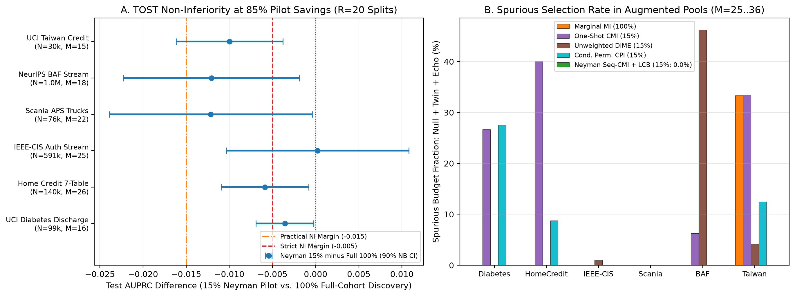
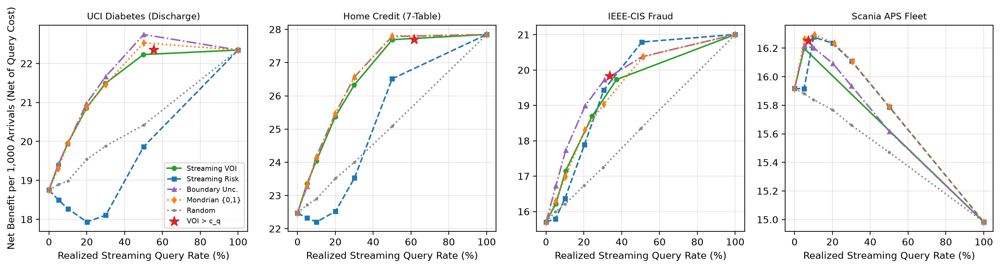
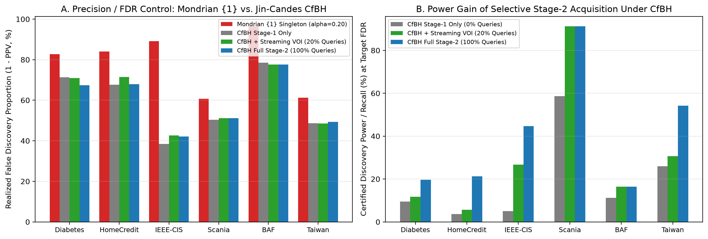

Evaluated across 6 fine-grained multi-channel cohorts (N = 30,000 to 1,000,000; M = 15–26 native channels; R = 20 splits) and grounded at the hospital discharge landmark on UCI Diabetes 130-US (99,343 discharged-alive non-hospice encounters across 69,990 patients):
Water-filling allocation over joint Phase-1 (Y, score_bin) strata enforces exact pilot budgets ρ ∈ (0, 1] even when π > ρ, cutting gain estimation RMSE by 46.6%–49.0% relative to simple random pilots (Proposition 1).
Capacity-matched forward conditional log-likelihood gain with exact two-phase variance VI + VII and Holm LCB stopping controls pure-noise null FWER at 2.5% (≤ 5%, Theorem 1) while preventing both One-Shot CMI twin duplication and LOCO twin cancellation.
Calibration-only streaming thresholds and autonomous Bayes stopping VOIK(x) > cquery maximize Vickers–Elkin Net Benefit (querying just 7.2% of trucks on Scania), while CfBH delivers certified positive selection at target FDR.
| Cohort (N, M Native, π) | Base Xbase | Global MI (100%) | SRS Pilot (15%) | Neyman Seq-CMI (15%) | Full Seq-CMI (100%) | Δ Net Benefit (pNI,NB) | Stress Spurious (null/twin/echo%) |
|---|---|---|---|---|---|---|---|
| UCI Diabetes Discharge (99k, M=16, 11.4%) | 0.1782 | 0.1834 | 0.2213 | 0.2214 | 0.2249 | +0.84 (0.0116) | 0 / 0 / 0% |
| Home Credit 7-Table (140k, M=26, 8.1%) | 0.1606 | 0.1788 | 0.2270 | 0.2324 | 0.2383 | +0.13 (0.0084) | 0 / 0 / 0% |
| IEEE-CIS Stream (591k, M=25, 3.7%) | 0.2059 | 0.3703 | 0.4697 | 0.5091 | 0.5089 | −0.04 (0.1386) | 0 / 0 / 0% |
| Scania APS Fleet (76k, M=22, 1.8%) | 0.5233 | 0.7837 | 0.7826 | 0.8515 | 0.8636 | +0.19 (<0.0001) | 0 / 0 / 0% |
| NeurIPS BAF Stream (1.0M, M=18, 1.1%) | 0.0715 | 0.1070 | 0.0812 | 0.1029 | 0.1150 | +0.07 (0.0006) | 0 / 0 / 0% |
| UCI Taiwan Credit (30k, M=15, 22.1%) | 0.4084 | 0.5504 | 0.5436 | 0.5442 | 0.5542 | −0.67 (0.5474) | 0 / 0 / 0% |



CfBH. (B) Certified recall at target FDR across 0%, 20% VOI, and 100% Stage-2 querying.
git clone https://github.com/deesatzed/imboreceipt.git cd imboreceipt python3 -m venv .venv && source .venv/bin/activate pip install -e ".[dev]" pytest -q # 37 passed imboreceipt bench-two-phase --out results/two_phase --n-splits 20